Iron-Man
Helm.
Ein 3D-gedrucktes Hardwareprojekt, bei dem Mechanik, Elektronik, Embedded-Programmierung und Oberfläche in einem kompakten Gesamtsystem zusammenkommen. Ziel war nicht nur ein optisch überzeugender Helm, sondern ein funktionierendes System mit beweglicher Front, beleuchteten Augen und sauber integrierter Technik.
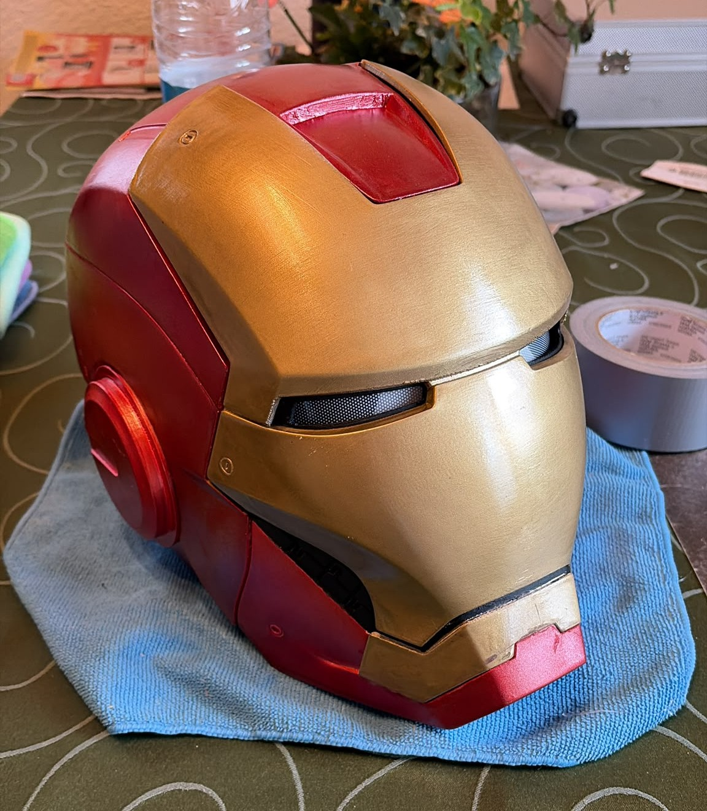
Im Projekt wurden mechanische Anpassungen, Elektronik-Integration und Embedded-Programmierung zusammengeführt. Besonders wichtig waren eine kompakte Bauweise, eine sichere Stromverteilung und eine hochwertige optische Umsetzung.
Die Mechanik musste funktional, kompakt und passend in den Helm integriert werden.
Ein wichtiger Teil des Projekts war die mechanische Weiterentwicklung der gedruckten Teile. Dafür wurden unter anderem eine eigene Servo-Box, ein Deckel, der exakt in den Helm passt, sowie passende Achs- und Verbindungselemente entwickelt. Ziel war es, die Bewegung der Front sauber zu führen und gleichzeitig möglichst wenig Bauraum zu verbrauchen.
Damit entstand nicht nur ein zusammengebautes Modell, sondern eine angepasste mechanische Lösung, die auf Funktion, Platzbedarf und Erscheinungsbild abgestimmt ist.
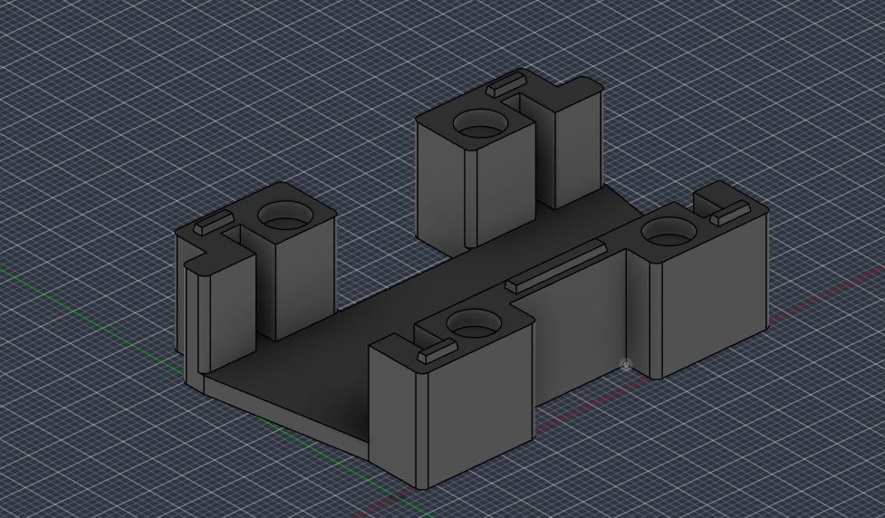
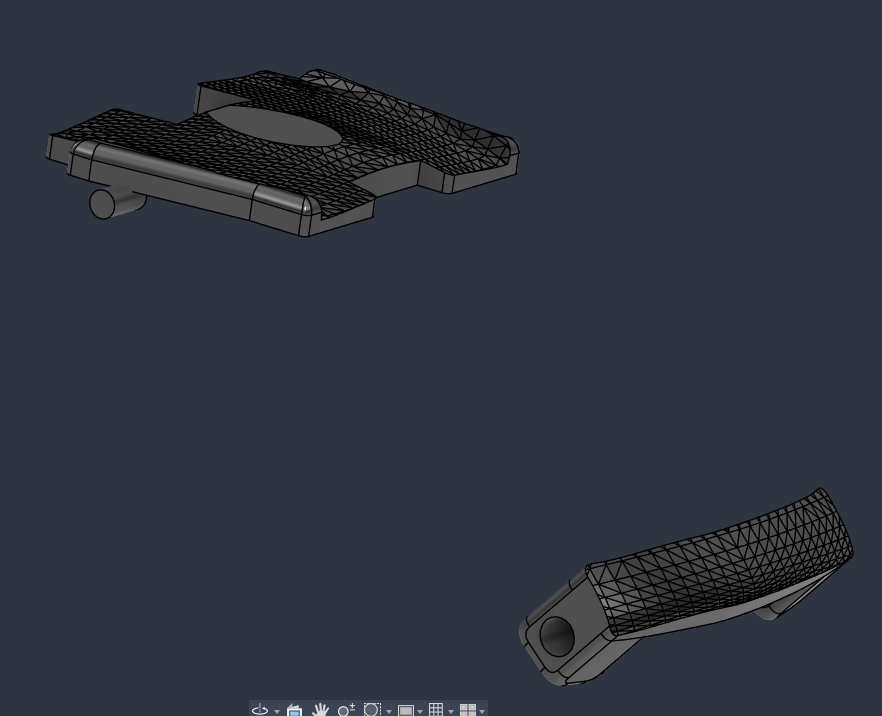
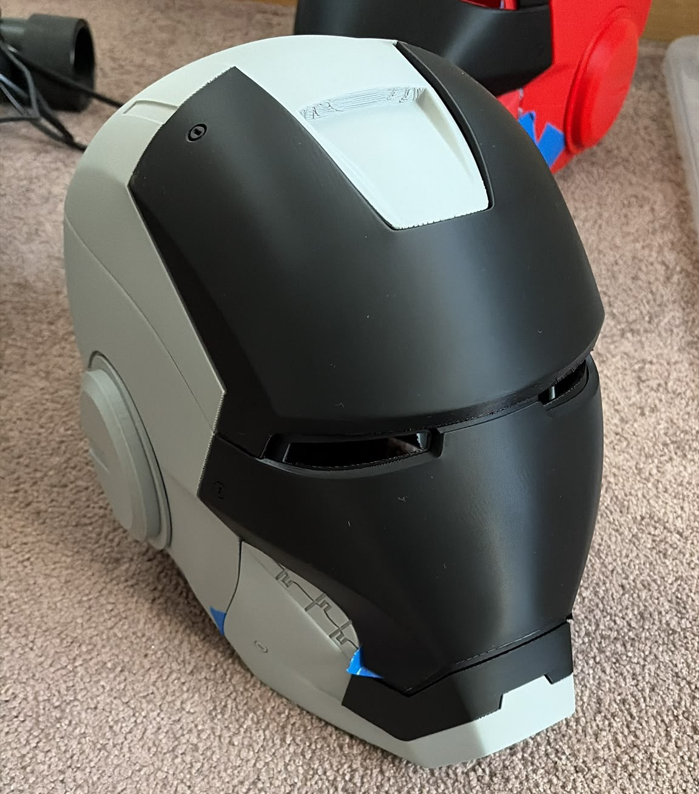
Auch die Optik war ein technischer Teil des Projekts.
Nachdem 3D-Druck ging es nicht nur um Funktion, sondern auch um ein sauberes Finish. Die einzelnen Helmteile wurden vorbereitet, grundiert und lackiert, damit die Oberfläche deutlich hochwertiger wirkt. Gerade bei einem Projekt wie diesem ist die Optik kein Nebenaspekt, sondern Teil des Gesamtsystems.
So wurde der Helm schrittweise vom Rohteil zu einem Ergebnis weiterentwickelt, das sowohl technisch als auch visuell überzeugt.
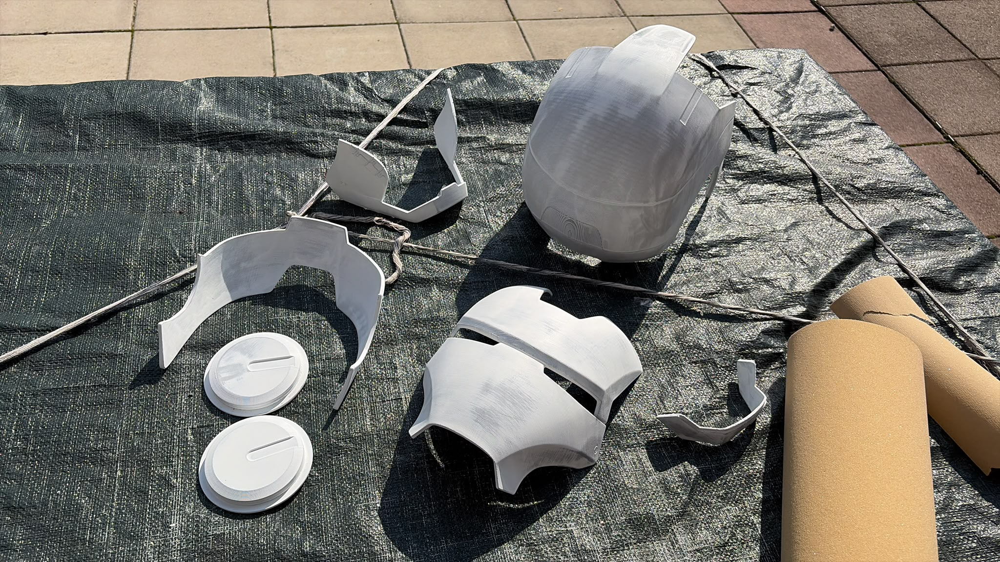
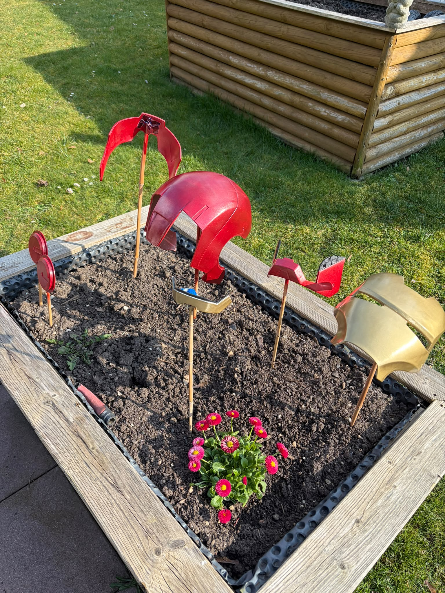
Elektronik und Stromversorgung wurden bewusst strukturiert aufgebaut.
Die Elektronik basiert auf einem ESP32 und einem MOSFET-Modul (MOS8), das als Schaltelement für die Beleuchtung eingesetzt wird. Durch diesen Aufbau lassen sich die Augen nicht nur ein- und ausschalten, sondern kontrolliert ansteuern.
Wichtig war außerdem eine klare Trennung der Stromkreise: Leistungsnahe Komponenten wie Antriebe und Beleuchtung wurden nicht unstrukturiert mit der Feinelektronik vermischt. Diese saubere Aufteilung erhöht die Sicherheit und macht das System robuster. Gleichzeitig mussten alle Komponenten kompakt im Helm untergebracht werden – mit festen Positionen und möglichst sauberem Kabelmanagement.
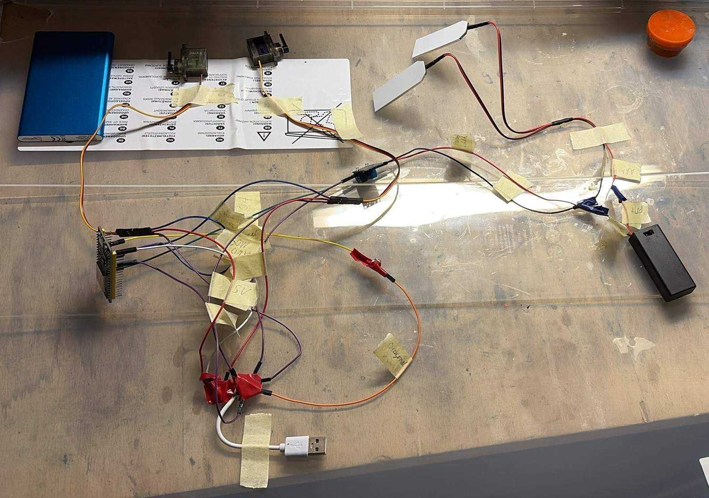
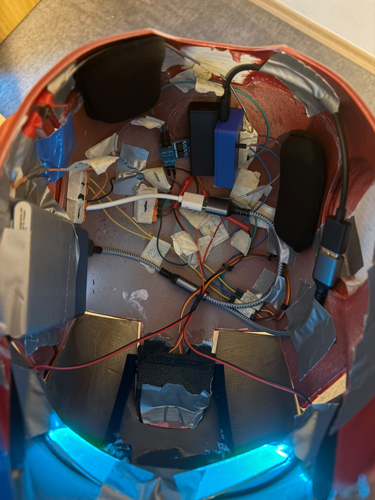
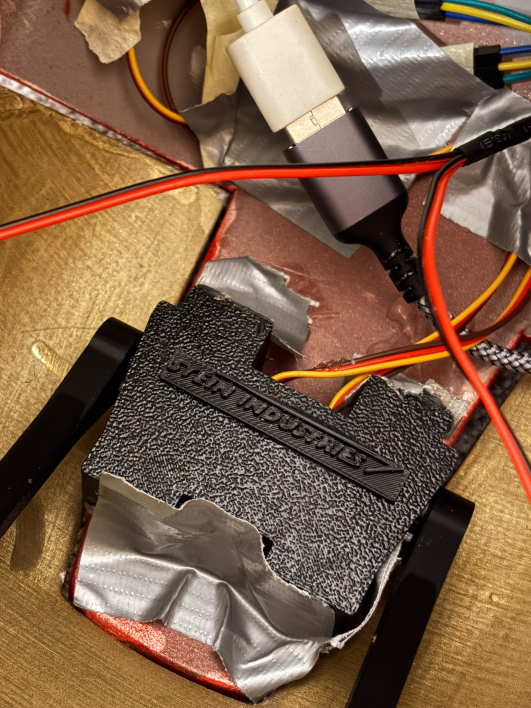
Systemübersicht
Die Komponenten wurden so integriert, dass Funktion, Sicherheit, Platzbedarf und Zugänglichkeit zusammenpassen.
Die Steuerung wurde mit PlatformIO und C++ für den ESP32 umgesetzt.
Für die Programmierung habe ich PlatformIO verwendet und den ESP32 in C++ angesteuert. Die Software übernimmt die Logik für die Servobewegungen und die Beleuchtung des Helms.
Besonders interessant ist die Ansteuerung der Augen: Durch den Einsatz des MOS8-Moduls kann die Beleuchtung nicht nur geschaltet, sondern auch weich eingefadet werden. Damit entsteht ein deutlich saubererer Effekt als bei einem einfachen Ein/Aus-Schalten.
ESP32
Der Mikrocontroller bildet die zentrale Steuerung für Mechanik und Licht.
PlatformIO
Die Entwicklungsumgebung wurde für eine saubere Embedded-Entwicklung und das Management des Projekts verwendet.
C++
Die Logik für Bewegungen, Zustände und Lichtsteuerung wurde direkt in C++ umgesetzt.
Fade-Effekte
Über das MOS8-Modul lassen sich die Augen gezielt und weich ein- und ausblenden.
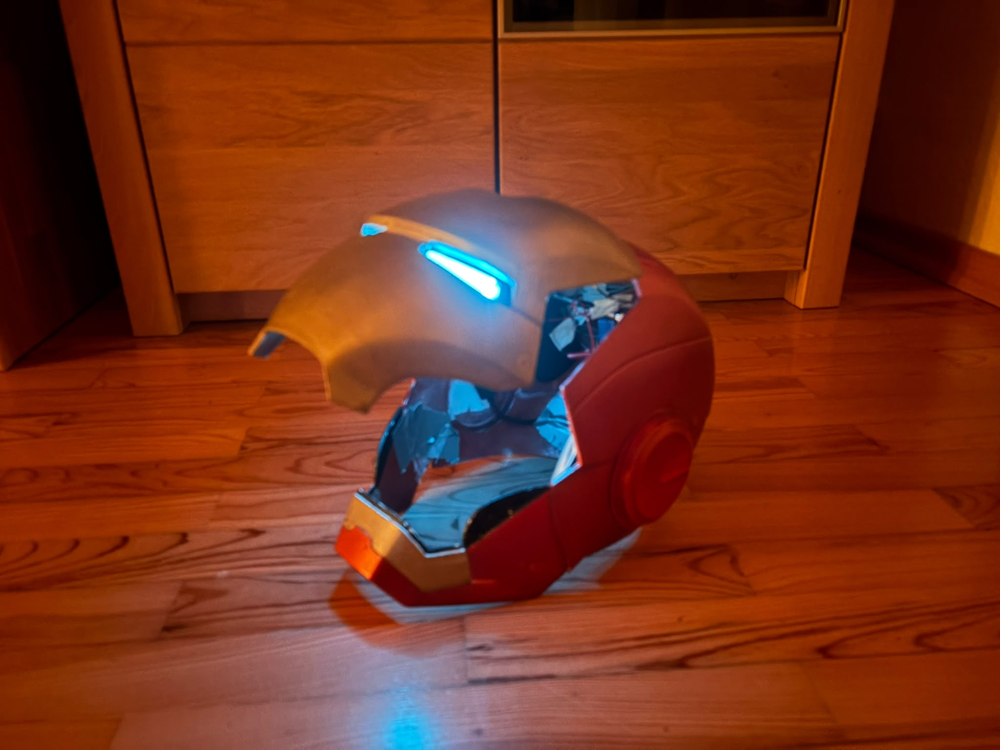
Funktion, Integration und Optik in einem kompakten System.
Der Iron-Man-Helm verbindet mechanische Eigenentwicklung, kompakte Elektronik, Embedded-Programmierung und Oberflächenbearbeitung in einem einzelnen Projekt. Gerade die Kombination aus beweglichen Bauteilen, sicherer Stromverteilung, Lichtsteuerung und optischem Finish macht den Helm für mich zu einem besonders vollständigen Hardwareprojekt.
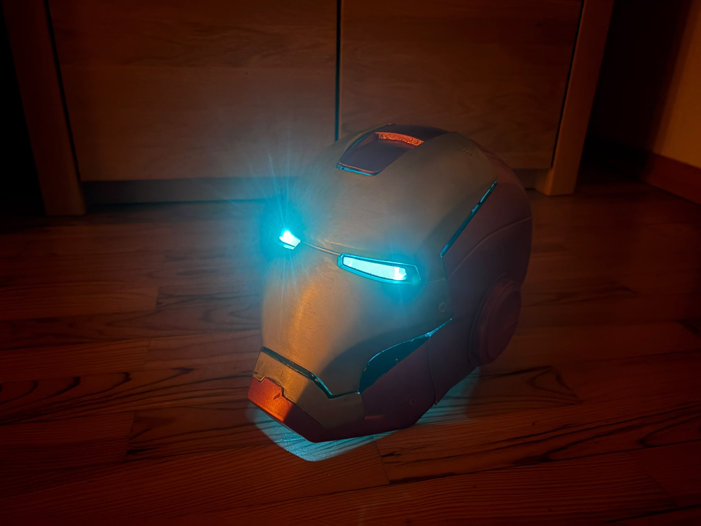